📊 Hướng dẫn cho lãnh đạo / quản lý
Lãnh đạo · quản lý mua hàng · theo dõi tiến độ. Mục tiêu: 5 giây biết tình hình, 1–2 cú bấm biết cần nhắc ai, vì sao.
1. Thói quen 5 phút mỗi sáng
- Mở menu Điều hành → đọc khung Kết luận nhanh (5–6 câu tự sinh).
- Bấm câu "Cần nhắc ngay: …" → danh sách dòng đỏ của người đó → xem cột Hoạt động cuối và NCC phản hồi.
- Tab Theo người → bấm 🔔 Nhắc người có nhiều lỗi chờ giải trình.
- Thứ 2: tab Nguyên nhân & xu hướng — lỗi tuần này nhiều hơn hay ít hơn, giải trình có bám kịp không.
2. Màn Điều hành
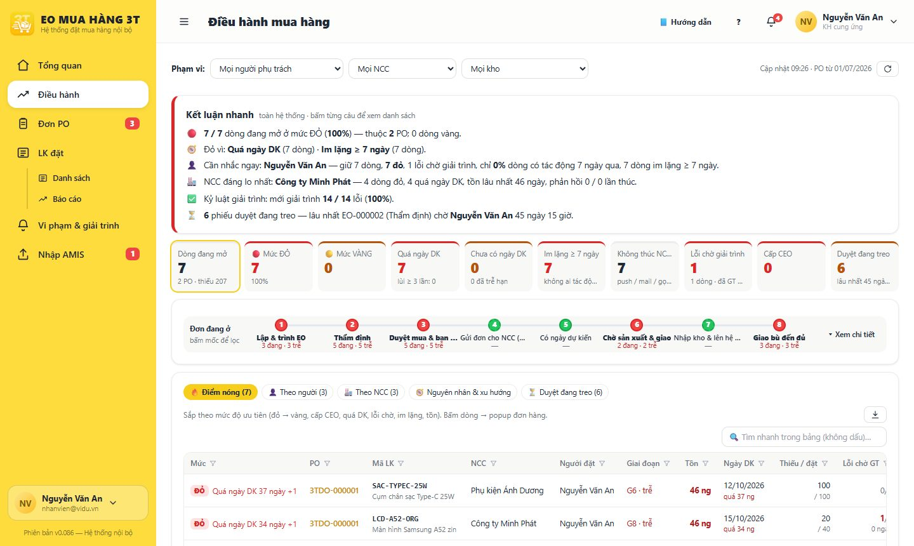
Kết luận nhanh — đọc thế nào
| Câu | Ý nghĩa | Bấm vào |
|---|---|---|
| 🔴 x / y dòng ở mức ĐỎ | Tỷ lệ đơn có vấn đề nghiêm trọng | Danh sách dòng đỏ |
| 🧭 Đỏ vì: … | 3 lý do đỏ nhiều nhất (quá ngày DK, im lặng, lỗi chờ…) | — |
| 👤 Cần nhắc ngay: A | Người có nhiều dòng đỏ nhất + % dòng có tác động 7 ngày (độ quyết liệt) | Dòng đỏ của A |
| 🏭 NCC đáng lo nhất | NCC nhiều dòng đỏ nhất, phản hồi / số lần thúc, giao trễ hẹn | Dòng của NCC đó |
| ⚠️ Kỷ luật giải trình | % lỗi đã được giải trình. Dưới 30% → chưa đủ cơ sở kết luận nguyên nhân | Tab Nguyên nhân |
| ⏳ Phiếu duyệt đang treo | Phiếu thẩm định / duyệt mua chờ ai, bao lâu | Tab Duyệt đang treo |
Ô sức khoẻ
Mỗi ô là 1 tiêu chí; bấm ô → tab Điểm nóng lọc đúng tiêu chí đó (ô đang chọn viền vàng, bấm lại để bỏ).
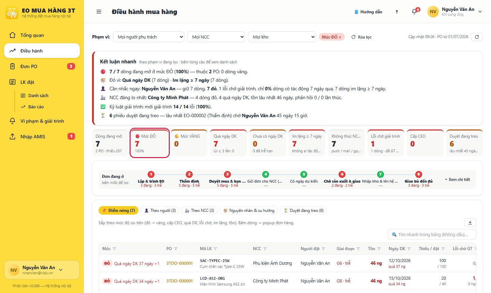
| Ô | Nghĩa |
|---|---|
| Im lặng ≥ 7 ngày | Dòng 7 ngày không ai cập nhật kế hoạch, push, mail NCC, gọi/Zalo, giải trình. |
| Không thúc NCC 7 ngày | Push + mail gửi NCC + gọi/Zalo = 0 trong 7 ngày. |
| Lỗi chờ giải trình | Tổng lỗi chưa giải trình (+ % đã giải trình toàn hệ thống). |
| Duyệt đang treo | Phiếu duyệt chưa xử lý + lâu nhất. |
Luồng giai đoạn — tồn ở đâu, ai giữ
Đường ngang G1 → G8: số trên mốc = số dòng đang ở, chấm đỏ = có dòng trễ hạn, bóng đỏ nhỏ = lỗi chờ giải trình 30 ngày. Bấm 1 mốc → khung chi tiết: ai đang giữ và ai làm trễ 30 ngày, % đúng hạn.
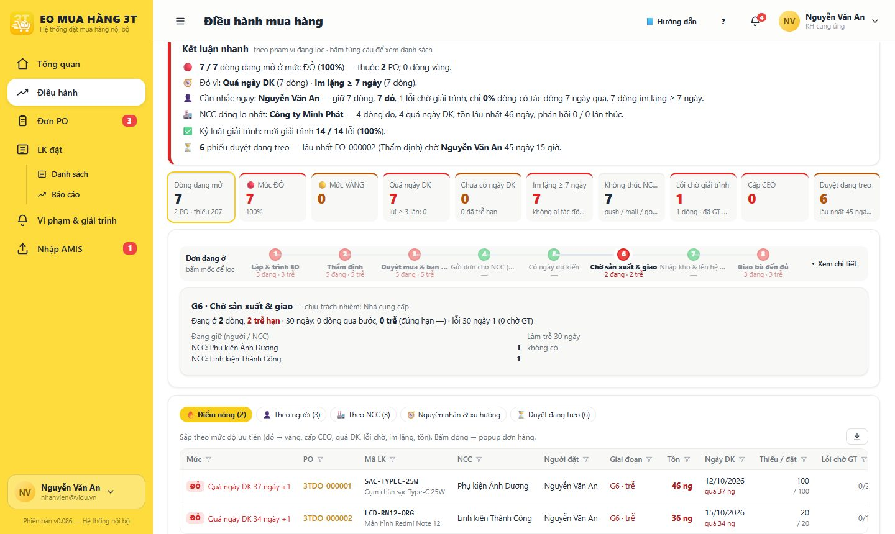
| Giai đoạn | Người chịu trách nhiệm |
|---|---|
| G1 Lập & trình | Người lập PO |
| G2 Thẩm định | Người thẩm định |
| G3 Duyệt mua & ban hành | Người duyệt mua |
| G4 Gửi đơn NCC · G5 Có ngày dự kiến | Người đặt hàng |
| G6 Chờ sản xuất & giao · G8 Giao bù | NCC (người đặt hàng theo dõi) |
| G7 Nhập kho & lên hệ thống | Kho / Kế toán (chỉ đo) |
Tab Điểm nóng
Dòng sắp theo mức ưu tiên. Mỗi dòng trả lời: tồn bao lâu · giai đoạn · ngày DK (quá bao nhiêu ngày, lùi mấy lần) · lỗi chờ · đã thúc NCC bao nhiêu lần · NCC trả lời gì · giải trình gần nhất · ai làm gì lần cuối, im lặng bao lâu · bị nhắc mấy lần. Bấm dòng → popup đơn hàng. Nút ⬇ xuất Excel.
Tab Theo người — ai cần nhắc
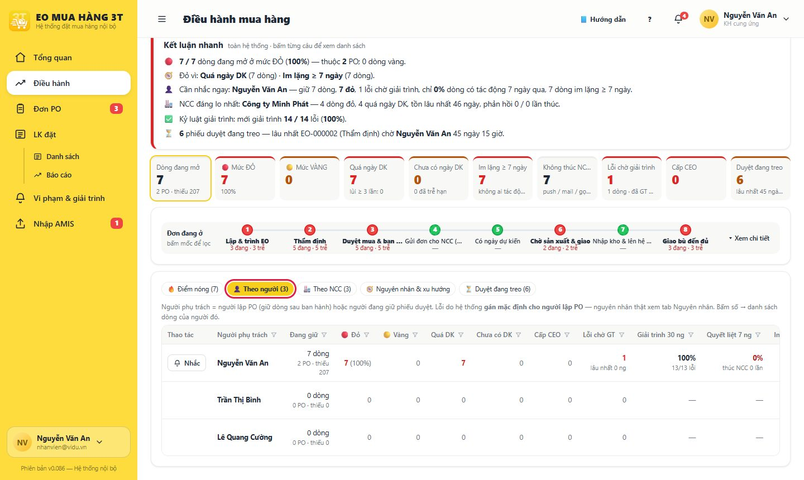
| Cột | Đọc thế nào |
|---|---|
| Đang giữ | Số dòng / PO / SL thiếu người đó đang phụ trách. |
| Quyết liệt 7 ngày | % dòng đang giữ có ít nhất 1 tác động trong 7 ngày. Dưới 50% = đỏ. |
| Giải trình 30 ngày | % lỗi phát sinh 30 ngày đã giải trình. |
| Bị nhắc | Số lần đã bị nhắc — nhắc nhiều mà vẫn im lặng là dấu hiệu cần xử lý. |
| Duyệt treo | Phiếu duyệt đang chờ người này + lâu nhất. |
Nhắc: nút 🔔 Nhắc (Admin / KH cung ứng / Theo dõi tiến độ) → nhập lời nhắn → app gửi thông báo cho người đó, ghi nhận nhắc nhở cho mọi lỗi đang chờ của họ.
Tab Theo NCC
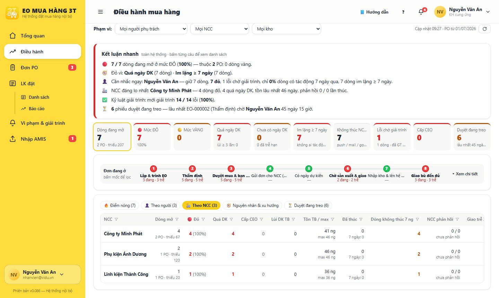
Tab Nguyên nhân & xu hướng
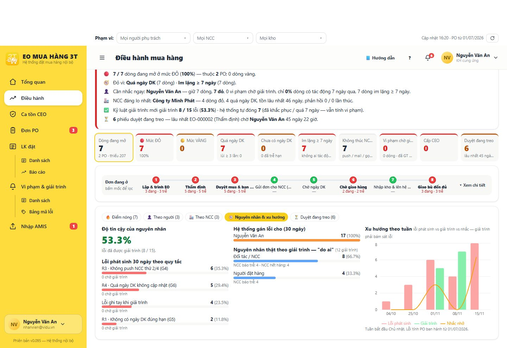
Tab Duyệt đang treo
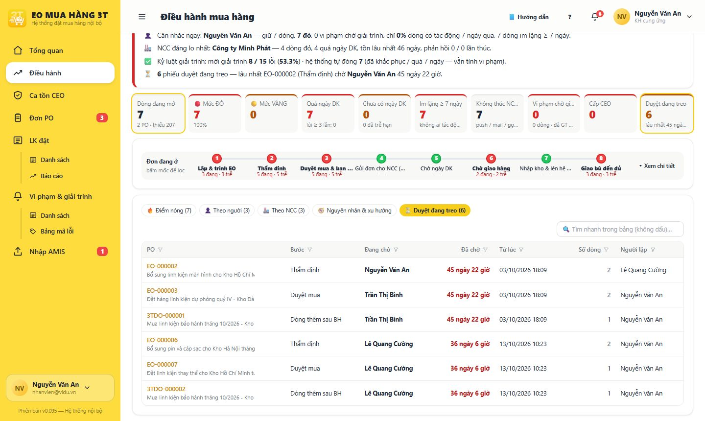
3. Đơn PO — nhìn theo từng PO
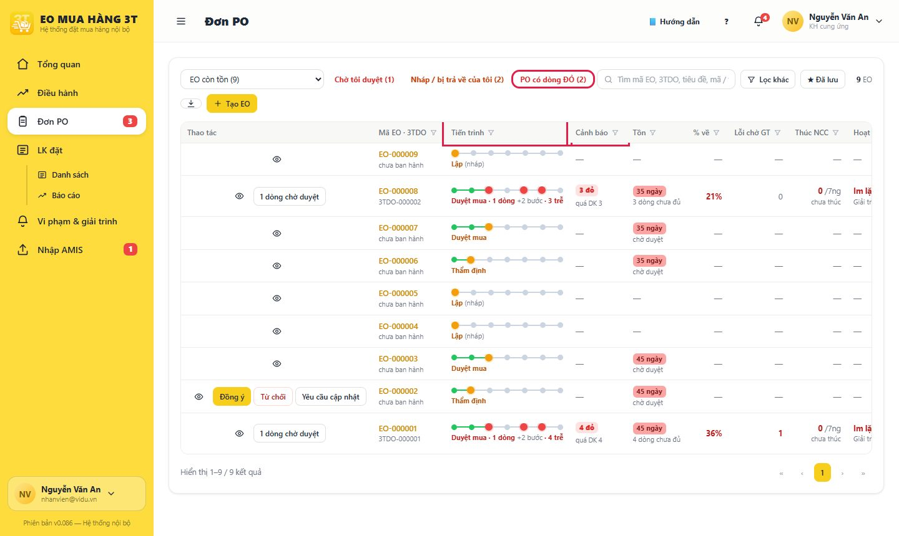
- Nhóm nhanh mới: PO có dòng ĐỎ, PO im lặng ≥ 7 ngày, PO có lỗi chờ giải trình.
- Sắp cột Cảnh báo giảm dần → PO tệ nhất lên đầu. Lưu thành bộ lọc cá nhân: ★ Đã lưu → Lưu bộ lọc hiện tại → ☆ đặt mặc định khi mở.

4. Ca tồn CEO
Menu riêng Ca tồn CEO: mọi dòng đang mở chạm ngưỡng cấp CEO, kèm mã ER.MH-201 (lùi ngày DK ≥ 3 lần), 202 (ngày DK cách ngày đặt ≥ 30 ngày), 203 (≥ 3 lỗi) — rê chuột xem diễn giải từng lần lùi / mốc ngày / lỗi. Mỗi dòng có: tồn bao lâu, đã thúc NCC mấy lần, NCC trả lời gì, giải trình gần nhất, im lặng bao lâu. Ô trên cùng bấm = lọc theo mã. Số đỏ trên menu = số ca CEO trong phạm vi của bạn.
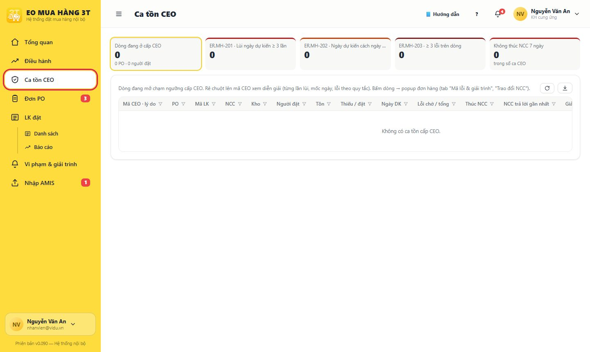
5. Vi phạm & giải trình
Tổng hợp theo mã lỗi
Vi phạm & giải trình → Theo mã lỗi: mỗi mã ER.MH 1 dòng — bước, tổng lỗi, chờ / đã giải trình, % giải trình, chờ quá lâu, số PO · dòng, ai bị gán nhiều nhất, nguyên nhân thật theo giải trình. Tính trên mọi trạng thái. Bấm Xem chi tiết → danh sách từng lỗi của mã đó. Bộ lọc Mã lỗi (chọn nhiều) dùng được ở mọi cách xem.
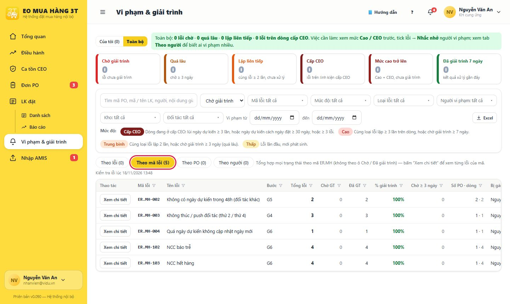
Theo PO / theo người
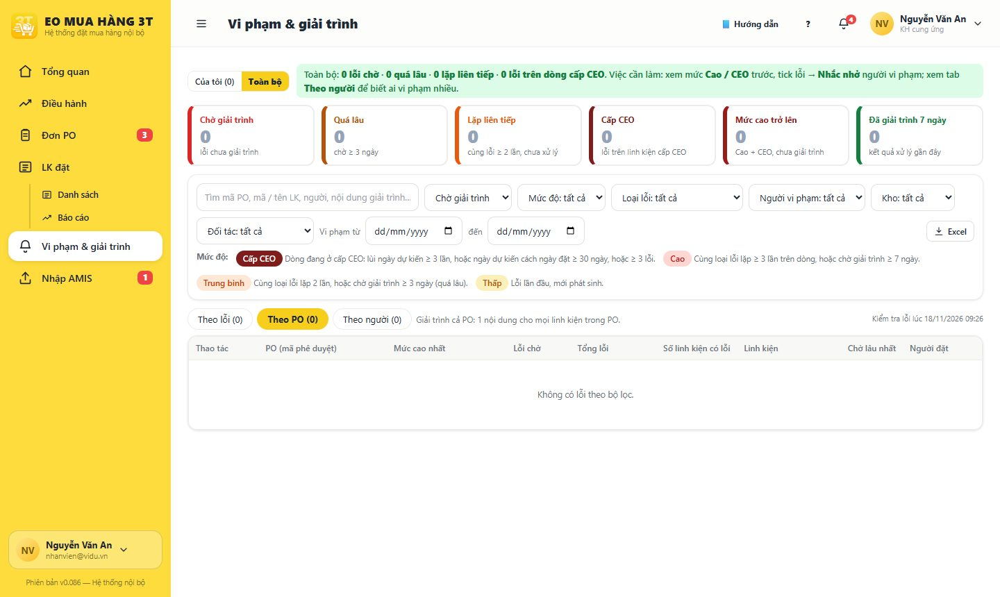
6. Lấy dữ liệu sang hệ thống khác (API)
Hệ thống khác (DVBH, báo cáo…) đọc được qua API có khoá: danh sách ca tồn CEO, tổng hợp lỗi theo mã, chi tiết lỗi + giải trình (lọc theo mã, PO, trạng thái, khoảng ngày), bảng mã lỗi. Liên hệ Admin để được cấp khoá.
7. Tổng quan & báo cáo
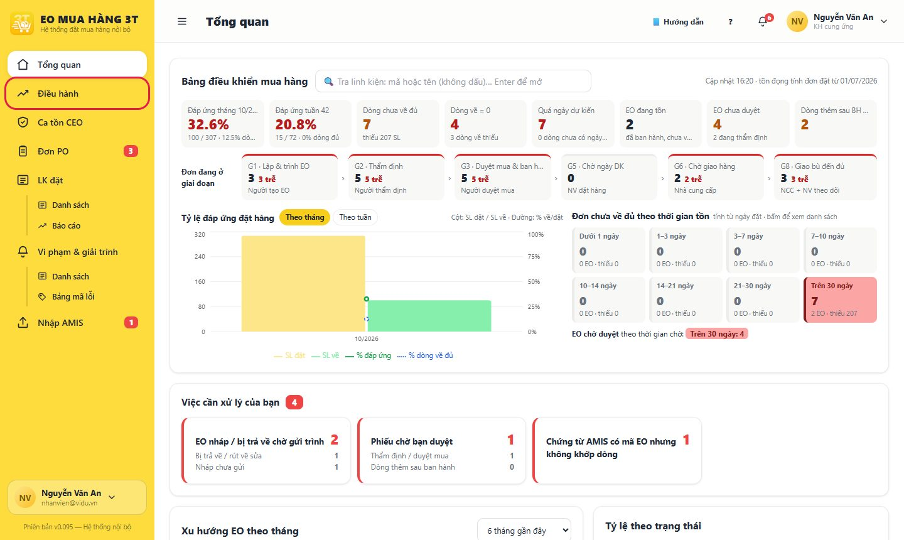
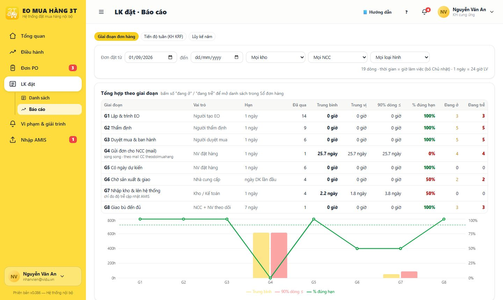